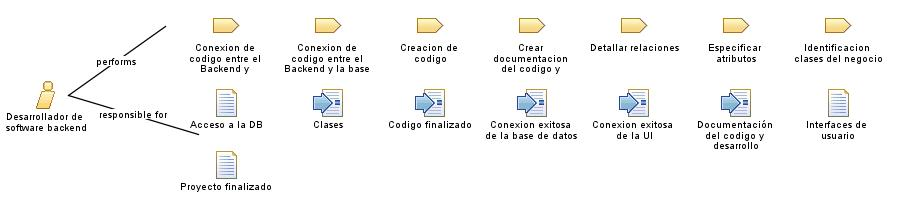

| Role: Desarrollador de software backend |
| |
 |
| El desarrollador de software backend es la persona encargada de hacer todo el código y la estructura del proyecto software. |
|
Relationships
 |
| Primary Performs |
|
| Modifies |
|
Main Description
El desarrollador de software tiene un papel importante en el proyecto ya que el encargado de este rol debe realizar
muchas tareas, entre ella esta:
-
Diseño y desarrollo de la arquitectura del software: El desarrollador backend participa en el
diseño y la planificación de la arquitectura del software, definiendo la estructura y los componentes necesarios
para que el sistema funcione de manera eficiente.
-
Desarrollo de APIs y servicios web: El backend se encarga de crear las APIs (Application
Programming Interfaces) y servicios web que permiten la comunicación entre el cliente y el servidor. Esto implica
definir los puntos de entrada, los métodos y los formatos de intercambio de datos.
-
Implementación de la lógica de negocio: El desarrollador backend se encarga de codificar la lógica
de negocio del software, es decir, las reglas y los algoritmos que permiten el funcionamiento adecuado de la
aplicación. Esto implica procesar datos, realizar cálculos, ejecutar validaciones y aplicar reglas específicas del
dominio.
-
Integración de sistemas y bases de datos: El backend se encarga de integrar diferentes sistemas y
bases de datos, asegurando la comunicación y el intercambio de información entre ellos de manera segura y
eficiente. Esto puede implicar el uso de tecnologías como SQL, NoSQL, ORM (Object-Relational Mapping) u otras
soluciones de integración.
-
Implementación de medidas de seguridad: El desarrollador backend debe considerar y aplicar medidas
de seguridad en el software, como autenticación de usuarios, autorización de acceso, encriptación de datos y
protección contra ataques maliciosos.
-
Optimización del rendimiento: El backend trabaja en la optimización del rendimiento del software,
mejorando la eficiencia en el procesamiento de datos y en la respuesta a las solicitudes del cliente. Esto puede
implicar el uso de técnicas como el almacenamiento en caché, la optimización de consultas a la base de datos y la
implementación de algoritmos eficientes.
|
Staffing
| Skills |
Un desarrollador de software backend necesita una combinación de habilidades técnicas para llevar a cabo su trabajo de
manera efectiva, entre ellas esta:
-
Conocimientos en lenguajes de programación: Un desarrollador de software backend debe tener
conocimientos sólidos en lenguajes de programación utilizados en el desarrollo backend, como Java, Python, C#,
entre otros. Debe ser capaz de escribir código limpio, eficiente y mantenible.
-
Frameworks y tecnologías backend: Es importante que el desarrollador backend esté familiarizado
con los frameworks y tecnologías comunes utilizadas en el desarrollo backend, como Spring (Java), Django (Python),
.NET (C#), entre otros. Debe ser capaz de utilizar estas herramientas para agilizar el desarrollo y mejorar la
eficiencia.
-
Diseño de API y servicios web: Un desarrollador backend debe tener experiencia en el diseño y
desarrollo de APIs (Application Programming Interfaces) y servicios web.
-
Bases de datos y consultas: Los desarrolladores de software backend trabajan con bases de datos
para almacenar y recuperar datos. Deben tener conocimientos en bases de datos relacionales (como MySQL, Oracle) y
no relacionales (como MongoDB, Redis). Además, deben saber cómo escribir consultas eficientes y optimizar el
rendimiento de las operaciones de base de datos.
-
Conocimientos de seguridad: La seguridad es una preocupación importante en el desarrollo backend.
Los desarrolladores backend deben tener conocimientos sobre conceptos de seguridad, como autenticación,
autorización, cifrado de datos y protección contra ataques comunes, como inyección de SQL.
-
Arquitectura y escalabilidad: Los desarrolladores backend deben tener habilidades en el diseño de
arquitecturas escalables y eficientes. Deben comprender los principios de arquitectura de software, como la
separación de preocupaciones, la modularidad y la escalabilidad horizontal o vertical.
|
| Assignment Approaches |
Hay varios enfoques comunes para asignar tareas a un desarrollador de software backend. Estos enfoques pueden variar
según la organización y el proyecto en particular. Algunos de los enfoques de asignación más utilizados son:
-
Asignación por especialización: En este enfoque, se asignan tareas al desarrollador backend en función de su
experiencia y especialización en áreas específicas. Por ejemplo, un desarrollador con experiencia en bases de datos
puede encargarse de las tareas relacionadas con el diseño y la optimización de consultas, mientras que otro
desarrollador con experiencia en desarrollo de API se encarga de las tareas relacionadas con la creación y el
mantenimiento de servicios web.
-
Asignación por proyecto: En este enfoque, los desarrolladores backend son asignados a proyectos específicos en
función de las necesidades y los requisitos del proyecto. Cada desarrollador puede ser responsable de un conjunto
completo de funcionalidades o módulos dentro del proyecto.
-
Asignación por capacidad y carga de trabajo: En este enfoque, las tareas se asignan a los desarrolladores backend
en función de su capacidad y carga de trabajo actual. Se tienen en cuenta factores como la disponibilidad, la
experiencia y la capacidad para cumplir con los plazos establecidos.
-
Asignación por equipos multidisciplinarios: En algunos proyectos, se forman equipos multidisciplinarios que
incluyen tanto desarrolladores backend como desarrolladores frontend, diseñadores y otros roles relevantes. En este
enfoque, las tareas se asignan de manera colaborativa dentro del equipo, teniendo en cuenta las fortalezas y
habilidades individuales de cada miembro.
-
Asignación por prioridad y urgencia: En este enfoque, las tareas se asignan en función de su prioridad y urgencia.
Los desarrolladores backend se encargan de las tareas más críticas y urgentes que requieren su experiencia y
conocimientos.
|
Key Considerations
El desarrollador backend debe tener en cuenta varias consideraciones clave para llevar acabo su rol, entre esos esta:
-
Conocimientos técnicos: El desarrollador backend debe tener un sólido conocimiento de los
lenguajes de programación y tecnologías utilizados en el desarrollo backend, como Java, Python,
C#, JavaScript, entre otros.
-
Seguridad: El desarrollador backend debe tener en cuenta aspectos de seguridad en el desarrollo
del software, como la protección de datos sensibles, la prevención de ataques y la implementación de prácticas
seguras de codificación. Debe estar al tanto de las vulnerabilidades comunes y seguir buenas prácticas de
seguridad.
-
Rendimiento y escalabilidad: El desarrollador backend debe considerar el rendimiento y la
escalabilidad del software. Esto implica optimizar el código, utilizar técnicas de caché, considerar la eficiencia
en el acceso a la base de datos y planificar la escalabilidad del sistema para manejar un mayor volumen de usuarios
y carga de trabajo.
|
|